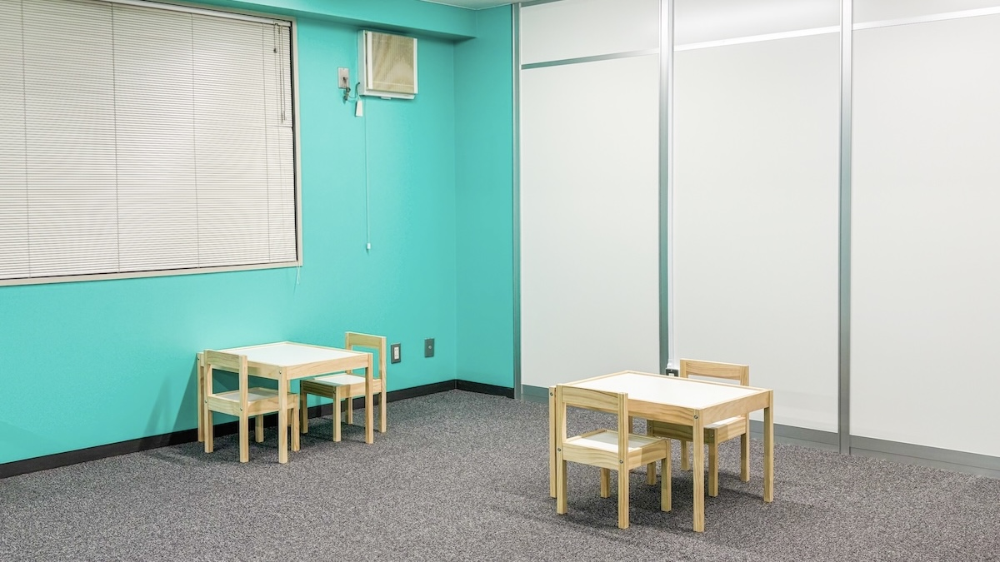
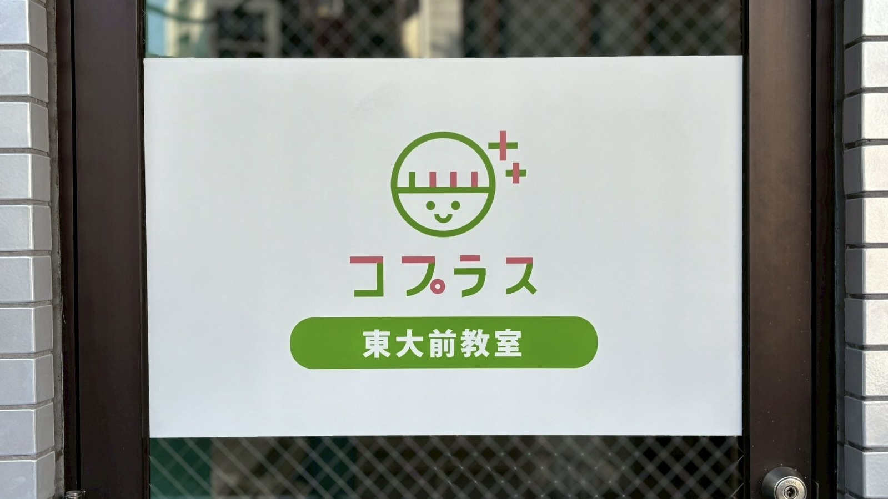

診断前の「ちょっと気になる」段階から、
作業療法士・幼稚園教諭・保育士に相談できます。


東大前教室その不安、診断を待たずに
話しに来てください。
一人ひとりのペースに合わせて、じっくり向き合います。
「受給者証って何？」の段階から、申請〜利用開始まで伴走します。
成長しても環境を変えずに、切れ目なく通い続けられます。
1分で完了。「まず相談だけ」でもOK。
→ 翌営業日までにご連絡します
専門スタッフに、今の気になりごとをそのままお話しください。
→ 対面・お電話・オンラインOK／お子さま連れも大歓迎
お持ちでない方は、併設の相談支援が取得まで伴走します。
お子さまに合わせた計画で、"できた"を積み重ねていきます。
はい、診断の有無に関係なくいつでもご相談いただけます。ご利用には受給者証が必要ですが、併設の相談支援が取得まで一緒にサポートします。
コプラスには相談支援もあるため、受給者証の取得手続きについてもスムーズにサポートできます。「まだ受給者証がない」「何から始めたらいいか分からない」という方も、まずはお気軽にご相談ください。
児童発達支援は未就学児、放課後等デイサービスは7〜18歳（小学1年生〜高校3年生）を対象としています。多機能型のため、成長に合わせて同じ施設でサービスを継続的に受けることができます。
受給者証をお持ちの場合、利用料の9割が自治体負担となり、ご家庭の負担は原則1割です。世帯収入に応じて月額上限額が設定されているため、多くのご家庭で月数千円程度からご利用いただけます。詳しくはお問い合わせください。
現在、送迎は行っておりません。東大前駅（東京メトロ南北線）より徒歩6分、本駒込駅（東京メトロ南北線）より徒歩8分、白山駅（都営三田線）より徒歩11分と、3路線からアクセスいただけます。
住所〒113-0023 東京都文京区向丘2-18-8 アドバンス第二ビル2F
電話03-5834-7788（10:00〜18:00 定休日：日曜・祝日）
最寄駅東大前駅 徒歩6分／本駒込駅 徒歩8分／白山駅 徒歩11分
お電話・オンラインでの相談もOK。しつこい営業や無理な勧誘は一切しません。
お問い合わせ
ありがとうございます。
翌営業日までに担当者からご連絡します。メールをご記入の方にはメールで返信しますので、お待ちください。